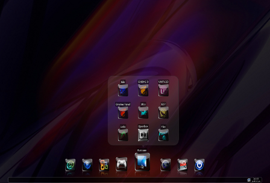
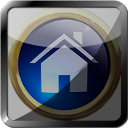
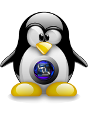

KDE, MATE, CINNAMON, XFCE, LXDE, E27,and OPENBOX☠ are gathered here on Hybryde to introduce the various facets of Linux desktop environments in a fun way. The Hybryde home desktop acts as a switcher, allowing you to move from one to another without disconnecting. This desktop, designed to be simple, already allows you to use your computer in a very user-friendly way thanks to the excellent Cairo-Dock tool. Hybryde desktop was created in 2012 by a team of enthusiasts, a big shout-out to all my friends.. Returning in 2026 on PC and PS4, on all Debian and Ubuntu derivative distributions. Set up on Debian Folky, the modifications made to Hybryde, mean that you are on a deeply modified Debian with the utmost respect for all. On PS4, All the scripts are present, including those for compiling Mesa, bzimages, etc. No blackscreen, no artifact


